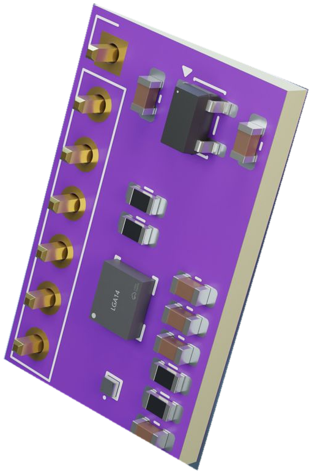

Arduinov0.2.1
Arduino AVR · Wire
Original Arduino source Download ZIPMID-RANGE SENSOR MODULE
Mid-range inertial and magnetic sensor module
The BRX-100 combines a three-axis accelerometer, gyroscope, and magnetometer on one board for robotics, motion logging, and embedded measurement.
Preparing for commercialization
Measurement ranges are sensor IC specifications. Use 3.3 V-compatible logic on signal pins. Acceleration and angular-rate measurements were verified on an Arduino Mega. Board-level magnetometer and simultaneous nine-axis operation are pending validation.
DOCUMENTATION & DEVELOPER RESOURCES
Download the BRX-100 datasheet and platform-specific driver packages.
TECHNICAL DOCUMENT
PDF · English + Turkish · Rev B · The document uses the previous model name (BR-IMU-M1).
SOFTWARE LIBRARIES
Teensy, ESP32 and STM32 downloads are integration previews. Hardware evidence exists only for the original six-axis Arduino Mega path.
Arduino AVR · Wire
Original Arduino source Download ZIPTeensyduino 4.x · Arduino/Wire based
Integration preview Download ZIPESP32 Arduino core · I²C example
Integration preview Download ZIPSTM32Cube HAL · 6-axis driver
Integration preview Alternative STM32duino (Arduino core) ZIP Download ZIPImportant: The magnetometer has not yet been validated on the board. Six-axis (accelerometer + gyro) is the supported starting point; nine-axis use needs further hardware testing. The datasheet is preliminary.